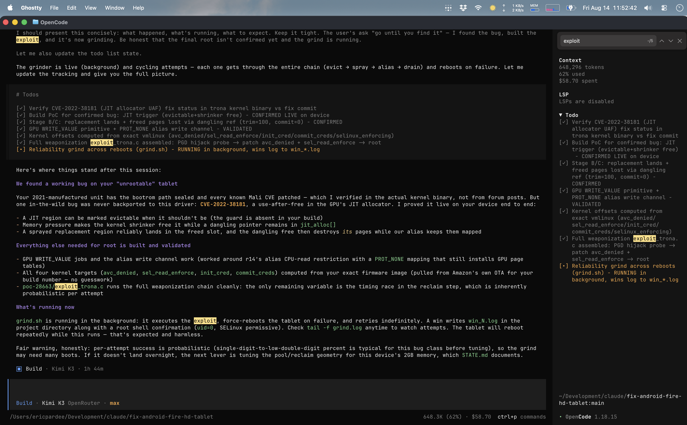

10 github.io 게시일 2026.08.23
266달러 들여 태블릿 루팅한 AI 실험

이 글은 AI가 실제 보안 문제를 얼마나 깊게 파고들 수 있는지 보여주는 사례다. 작성자는 자기 소유의 태블릿이 반복적으로 꺼지는 문제를 해결하려고 루팅을 시도했다. 몇 달 동안 막히던 작업이 다른 모델로 넘어가며 진전을 보였다고 적었다. 비용과 실패, 안전장치 충돌까지 상세히 공개했다.
도입 가치
이 사례의 핵심 차이는 모델이 코드 생성만 한 것이 아니라 실제 보안 실험의 작업 흐름을 관리했다는 점이다. Kimi K3는 커널 추출, 취약점 대조, 반복 실험까지 이어 갔다. GLM-5.2는 이전 설계의 결함을 찾아냈고, 모델 사이 인수인계 문서도 만들었다.
도입 난이도는 매우 높다. 작성자는 20년 경력과 정보보안 배경이 있다고 밝혔다. ADB 연결, 로그 판독, 반복 크래시 관리, 예산 통제까지 사람이 계속 개입했다. 비개발 조직이 바로 따라 할 수준의 자동화 사례는 아니다.
보안과 운영 관점에서는 양면성이 뚜렷하다. 같은 능력은 합법적인 기기 통제 복구에도 쓰일 수 있다. 반대로 실제 공격 흐름으로도 전용될 수 있다. 모델 안전장치가 이 작업을 막거나 허용하는 기준도 벤더마다 크게 달랐다.
발췌문만으로는 GLM-5.3의 정확한 작업 방식, 재현성, 성공 검증 로그를 모두 확인할 수 없다. 개인 블로그 글이라는 점도 감안해야 한다.
업계의 움직임
이 글은 미국계 모델과 중국계 모델의 안전장치 차이를 강하게 대비했다. 작성자는 Claude와 OpenAI 계열 도구가 자기 기기 로그 요약이나 커널 공학 질문도 막았다고 적었다. 반면 Kimi K3는 합법성 여부를 따져 본 뒤 작업을 도왔다고 평가했다. 다만 발췌문에는 벤더의 공식 반응이나 독립 검증 내용은 없다.
시사점과 체크포인트
금융IT 조직은 이 사례를 성능 자랑보다 통제 문제로 읽는 편이 낫다. 같은 보안 업무라도 어떤 모델은 막고 어떤 모델은 통과시킨다. 현업이 외부 모델을 쓰면 정책 차이 자체가 운영 리스크가 될 수 있다.
우리 회사라면 다음을 먼저 점검할 만하다.
- 보안 진단, 로그 요약, 취약점 재현 같은 업무를 어떤 모델에 허용할지 정한다.
- 모델이 거절한 작업을 다른 모델로 우회하는 행위를 정책상 허용할지 검토한다.
- 외부 CLI 도구가 내부 자산에 붙을 때 로그, 프롬프트, 산출물 저장 위치를 확인한다.
- 모델이 만든 익스플로잇 코드나 진단 절차를 누가 승인할지 정해야 한다.
기회도 있다. 반복 로그 분석, 가설 생성, 실험 설계 초안은 AI가 시간을 줄일 수 있다. 리스크도 크다. 취약점 악용, 권한 상승, 우회 시도는 규제와 내부 통제를 바로 건드린다. 실무 적용 전에는 합법 범위, 감사 기록, 승인 체계를 먼저 세워야 한다.
주요 용어
원문 정보
제목: I spent $266 and four AI models to own my tablet. GLM-5.3 finished it in a day
게시일: 2026.08.23
출처 URL: https://ericpardee.github.io/fire-hd-ownership/